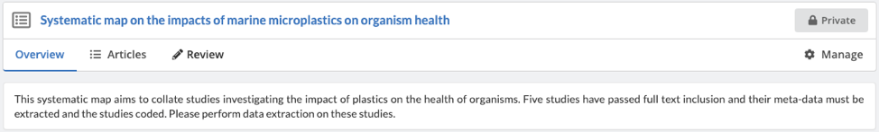
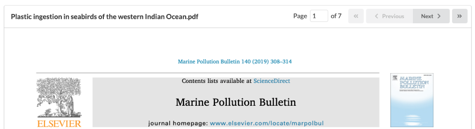
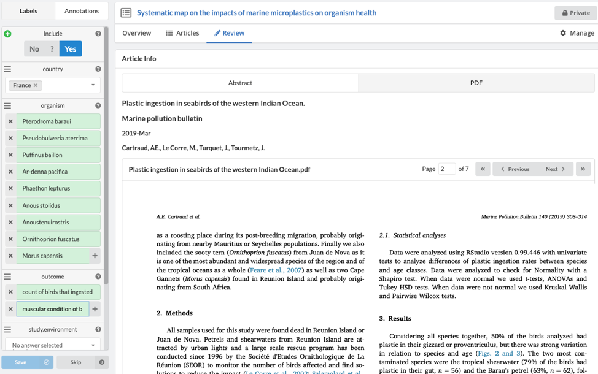
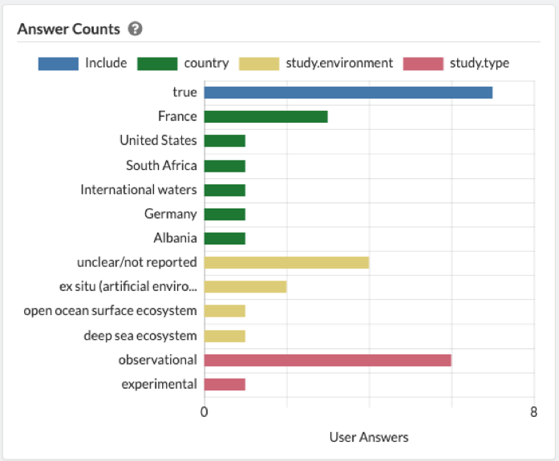
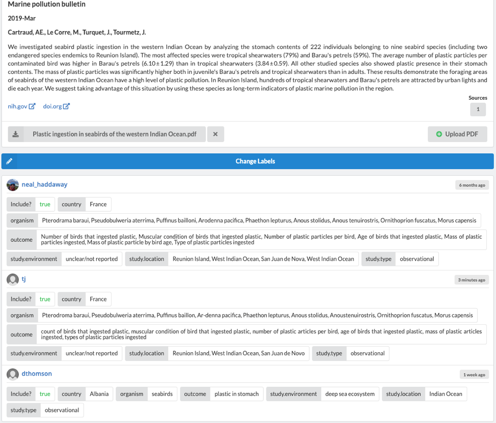
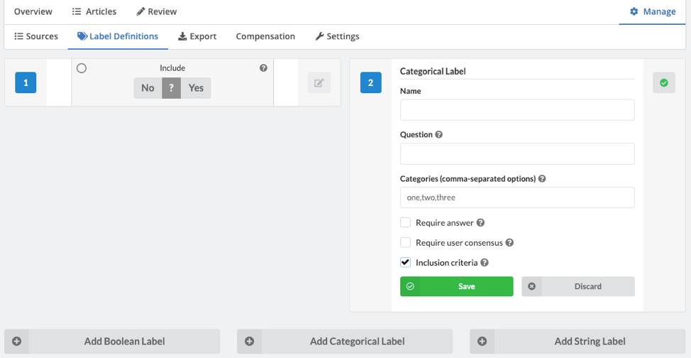

3. Extracting meta-data and study coding
This session will cover how to extract data from studies. It will also describe coding of studies, which is used in systematic mapping. This process involves populating an interactive database with predefined codes that allow users to rapidly search for relevant studies based on a suite of information about the study setting and methods. In a practical exercise, you' wi'll gain first-hand experience of extracting meta-data and coding studies for a systematic map.
Learning objectives
- To understand the key principles of meta-data extraction and study coding
- To appreciate the difference between meta-data extraction and coding, and when each is appropriate
- To understand how to design systematic map databases and appreciate the need to consider usability
- To gain experience of extracting meta-data and coding studies
To begin, watch the following presentation.
You can find the lecture handouts here.
Practical exercise
In this exercise, you will gain experience using the free software SysRev to extract meta-data and code studies in a hypothetical review on the impacts of marine plastics.
You have been recruited into a team conducting a systematic map on evidence of the effects of marine plastics on organism health. The map is progressing well and is now at the meta-data extraction and study coding stage. At this point, you have been given 5 articles for which meta-data extraction and coding must be conducted. The articles cover a range of systems and organisms, some of which includes human food species.For an overview of Sysrev, please refer to this demo.
Click on the following link to set up an account and join the review: https://sysrev.com/register/21d40d5e9c45
Once you have joined the review, you will see the platform has three tabs: ‘Overview’ (which displays high-level graphics on the progress of the review), ‘Articles’ (where you can filter and see the list of articles in the project), and ‘Review’ (where you can extract meta-data and code studies:
As a review member, you will be able to extract meta-data and code articles but not edit the settings of the review (‘Manage’).
To begin reviewing articles, click on the ‘Review’ tab and Sysrev will automatically display the first of five articles that have been uploaded. By default, Sysrev shows the ‘Abstract’ view. Click on ‘PDF’ to view the full text. In order to navigate within a given PDF, use the ‘Previous’ and ‘Next’ buttons, shown below.
In the left-hand panel, you will see the ‘Label’ prompts – that is, the meta-data and coding to be extracted from each article.
Take some time to read the objectives, methods, and results of each paper and fill in the Label prompts as best you can. Sysrev facilitates three types of labels: Boolean (True/False), Categorical (pre-defined choices), and String (free text responses). In combination, the label prompts give the reviewer flexibility in which (and how much) data is extracted.
When extracting data, you can select multiple values for bot drop-down labels (coding) and free text labels (add new lines by using the ‘+’ button for each variable.) You will need to complete all ‘required’ labels, as well as designate ‘Yes’ for inclusion before saving and reviewing the next article.
Once an article has been saved, the data is automatically logged in both the ‘Overview’ and ‘Articles’ tab.
The ‘Articles’ tab shows which reviewers have reviewed each article. By clicking on a specific article, you can see which labels were ascribed by each reviewer. If you wish to alter the extracted data, simply click ‘Change Labels’ to be brought back to the article review screen.
If you’d like to see how the data extraction was set up, create your own new review (its free!) and proceed to ‘Manage’ -> ‘Label Definitions.’ You can now create as many boolean, categorial, and string ‘Labels’ as required by your project. For boolean and categorical labels, you can also designate any label as “inclusion criteria” – which stipulates a specific answer as being required for inclusion. This is a useful way to clarify inclusion requirements to your reviewers.
Once you have finished the review, you can download the map database by clicking ‘Export’, then either ‘Group Answers’ (one line entry per article, all answers consolidated across reviewers) or ‘User Answer’ (one line entry per reviewer per article), and then click ‘Generate’. The CSV file is then ready for download.
Now that you have seen how to extract meta-data and code studies in a systematic map, we'll move on to discuss mapping synthesis.
Move to the next module!